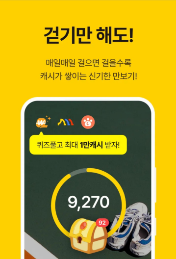

캐시워크 돈버는퀴즈 정답, 매일 빠르게 찾는 방법 (초보 가이드)
걷기만 해도 포인트(캐시)를 주는 앱 캐시워크에는, 하루 한 번 정답을 맞히면 추가 포인트를 주는 '돈버는퀴즈' 코너가 있습니다. 황금거위·배민·키토선생 등 브랜드 이벤트와 연계된 문제가 매일 새로 올라오는데, 정답을 몰라 그냥 지나치는 분이 많습니다. 이 글에서는 정답을 매일 빠르게 찾는 방법과 참여 요령을 정리했습니다.
돈버는퀴즈란?
돈버는퀴즈는 특정 브랜드의 이벤트·상품 정보를 소재로 한 O/X 또는 단답형 퀴즈입니다. 정답을 입력하면 소액의 캐시(포인트)를 적립해 주며, 이 포인트는 일정 금액이 모이면 편의점·커피 등 기프티콘으로 교환할 수 있습니다. 광고성 문제가 많아 정답이 곧 그 브랜드의 홍보 문구인 경우가 대부분입니다.

정답을 빠르게 찾는 3가지 방법
1) 앱 안에서 직접 확인 (가장 정확) 캐시워크 앱 → 하단 '돈버는퀴즈' 탭에서 현재 진행 중인 문제를 직접 봅니다. 문제 화면의 광고 배너나 연결된 브랜드 페이지에 힌트가 들어 있는 경우가 많습니다.
2) 포털에서 '캐시워크 정답 + 날짜' 검색
매일 여러 블로그·매체가 그날의 정답을 정리해 올립니다. 캐시워크 정답 7월 24일처럼 날짜를 붙여 검색하면 당일 정답 모음을 빠르게 찾을 수 있습니다.
3) 브랜드 키워드로 확인 문제에 등장하는 브랜드(예: 황금거위, 배민, 키토선생)를 기억해 두면, 정답 정리 글에서 해당 브랜드 항목만 골라 빠르게 확인할 수 있습니다.
참여 시 주의사항
- 정답은 실시간으로 바뀌거나 조기 종료될 수 있습니다. 정리 글의 정답이 이미 지난 문제일 수 있으니, 날짜와 브랜드를 꼭 확인하세요.
- 일부 퀴즈는 입력 횟수·시간 제한이 있습니다. 확실한 정답을 확인한 뒤 입력하는 게 좋습니다.
- 하루에 참여할 수 있는 퀴즈 수와 적립액에는 한도가 있습니다.
- 적립 포인트는 즉시 현금이 아니며, 교환 조건(최소 금액 등)을 확인해야 합니다.
이렇게 하면 편해요 (루틴 팁)
매일 아침 걷기 기록을 확인할 때 정답 검색 → 퀴즈 참여를 한 세트로 묶어두면 놓치지 않습니다. 몇십 원 단위지만 매일 쌓이면 한 달에 커피 한두 잔 값은 되므로, '짠테크' 습관으로 삼기 좋습니다.
참고 자료
- 캐시워크 돈버는퀴즈 정답 종합 — 비즈월드 / 이코노미톡뉴스 등